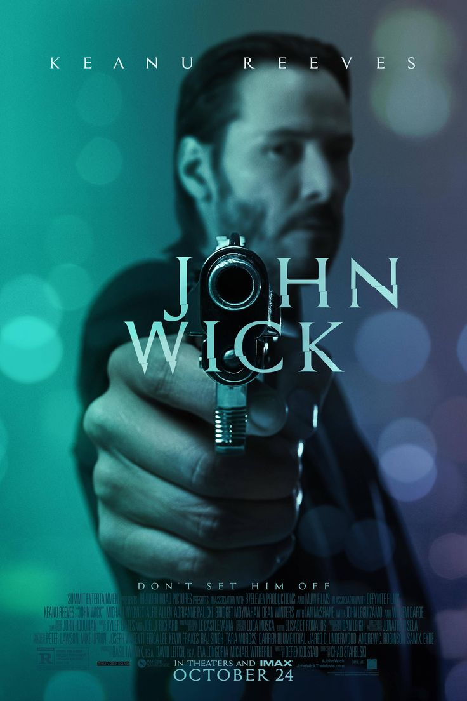
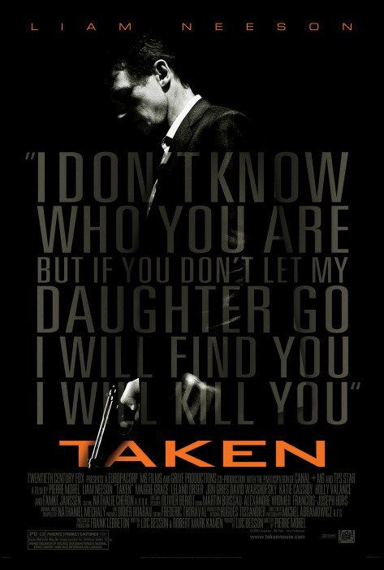
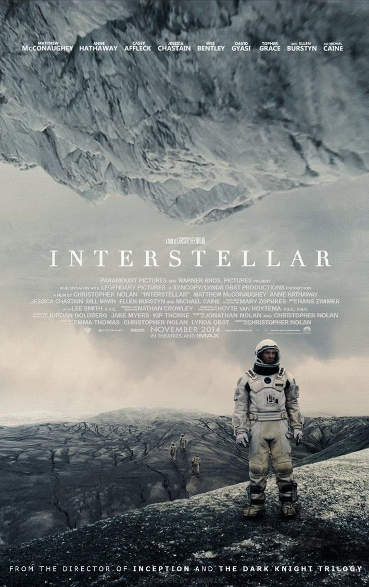
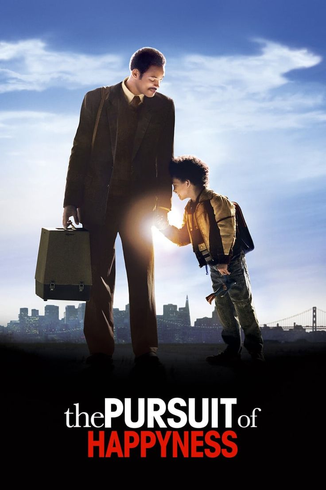
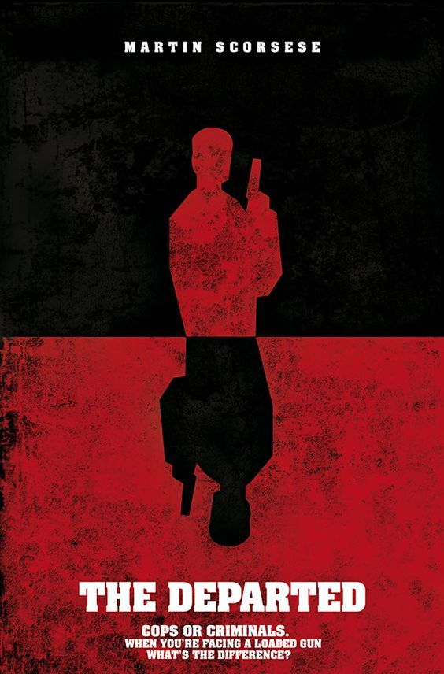
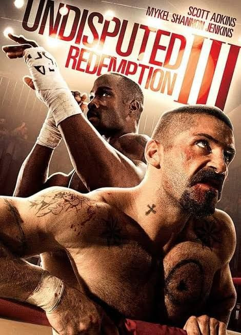

Here are some of my favorite movies, along with a brief overview. This website is a showcase of my front-end development skills, where I present these movies in an engaging and visually appealing way.






John Wick (2014)
John Wick, a retired hitman, is forced back into the criminal underworld after the death of his beloved dog, a final gift from his recently deceased wife. As he seeks vengeance, his ruthless efficiency leads to a blood-soaked chase through a world of crime and betrayal.
Taken (2008)
When his daughter is kidnapped by a human trafficking ring during a trip to Paris, former CIA operative Bryan Mills must use his special set of skills to track down and rescue her. With limited time and resources, he embarks on a relentless mission to save her, no matter the cost.
Interstellar (2014)
In a near-future Earth ravaged by climate disaster, a team of astronauts travel through a wormhole to search for a new habitable planet for humanity. Led by former NASA pilot Joseph Cooper, their mission uncovers the mysterious nature of time and space, while Cooper struggles with his personal sacrifice and the love for his daughter left behind.
The Pursuit of Happyness (2006)
Based on the true story of Chris Gardner, this inspirational film follows his journey from homelessness to becoming a successful stockbroker. While raising his young son, Chris faces overwhelming odds, but his determination to provide a better life for them both leads to eventual success.
The Departed (2006)
In this intense crime thriller, an undercover cop and a mole in the police force are trying to identify each other while infiltrating an Irish gang in Boston. With betrayal, deception, and high stakes, both sides race against time to uncover the other's identity before it's too late.
Undisputed III: Redemption (2010)
George "Iceman" Chambers, a former world heavyweight boxing champion, is imprisoned in a Russian jail, where he must face the ruthless champion Yuri Boyka in an underground fight. As he fights for his survival and freedom, he learns about redemption, strength, and the true meaning of victory.